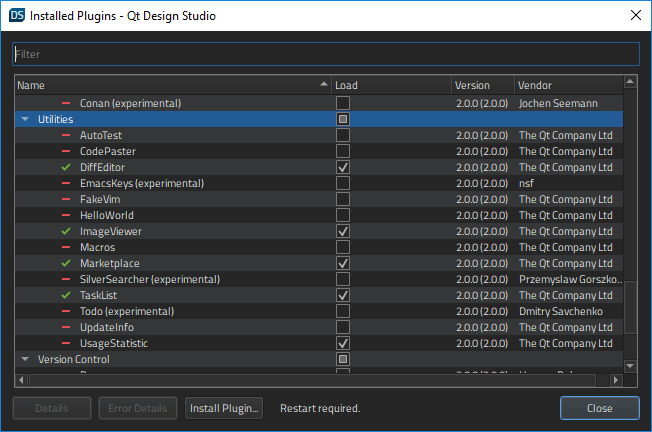

Manage data collection
To enable the use of the telemetry plugin, you need to select Enable Usage Statistics in the splash screen that appears when you first launch Qt Design Studio. If the splash screen does not appear, you can enable the telemetry plugin by selecting Help > About Plugins > Utilities > UsageStatistic on Linux and Windows (or Qt Design Studio > About Plugins > Utilities > UsageStatistic on macOS).

See below for more information about the collected data:
Principles of data collection
No personal data, such as names, IP addresses, MAC addresses, or project and path names are collected. However, QUuid objects are used to identify data records that belong to one user. The objects cannot be converted back to the actual values from which they were generated.
For more information about Qt privacy policy, select Legal Notice and Privacy Policy.
See also Collect usage statistics.